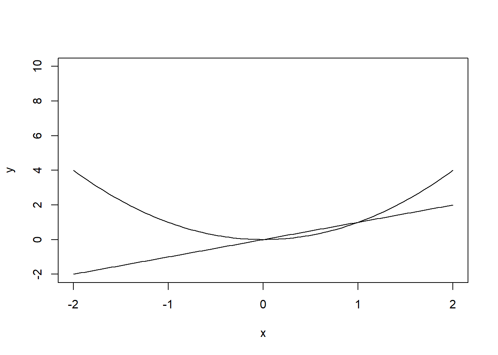
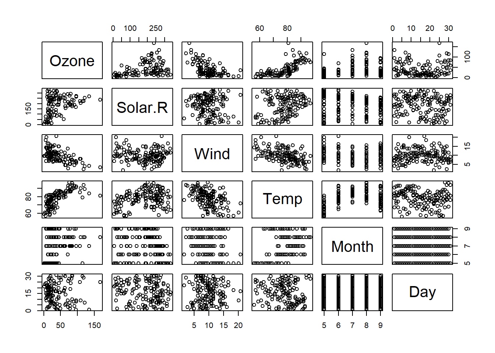

library(swirl)Warning: package 'swirl' was built under R version 4.4.3
| Hi! Type swirl() when you are ready to begin.Assignment Release Date: TBC
Submission Date/Time: TBC
This is an individual assignment. You must record a presentation about commodity forecasting. See “Assessment Details†below for eligible commodities.
This task will assess your skills in research, analysis, communication, time management, and organisation. If in doubt, contact your Module Leader Cam Calderon.
| Criteria | Weight |
|---|---|
| Effective introduction | 10% |
| Key literature, citations, and referencing | 10% |
| Appropriate use of Refinitiv software | 10% |
| Appropriate use of RStudio software | 10% |
| Subject knowledge of forecasting methods | 20% |
| Recommendations, policy alternatives, plans | 20% |
| Appropriate conclusions | 10% |
| Professional presentation | 10% |
Descriptions for each criterion and expectations are explained in the original brief.
Record a 10–15 min individual video presentation with your face, voice, and slides.
Submit via Turnitin.
You may use Panopto, PowerPoint, or other tools.
Keep file sizes low using online compression tools.
Only submit ONE of the following topics:
You must not use generative AI to write this assignment. The only exception is using AI to assist with your R script creation, with clear acknowledgment.
Example AI statement: > I used ChatGPT to help structure R code related to plotting forecasts. Prompt: “Create an R function to forecast wheat prices using exponential smoothing.”
Forecast? Predicting the future value of a time series - data with time
This lab reviews how forecasting is use by economists in the real life.
Browse the Office for Budget Responsibility website. Under ‘Publications’ > ‘Working Papers’, find and read the abstract of Working Paper No.19: The OBR’s forecast performance. Here’s your interactive tutorial. Submit your answers and get feedback instantly!


RStudio is a wrapper for R; we are using RStudio because it makes looks R more organised and straightforward. Follow the following instructions:
go to www.r-project.com
click on ‘CRAN mirror’
choose one of the two UK mirrors - https://www.stats.bris.ac.uk/R/ or https://cran.ma.imperial.ac.uk/
Click on ‘Download R for Windows’ or ‘Download R for macOS’
Click on ’install R for the first time
Click on ‘Download R-… for Windows’, the current version is R-4..5.1. Or alternatively, download the executable file for macOS.
double-click the downloaded file, then click on ‘Run’, ‘language:English’, ‘OK’, and read and follow the instructions of installation until you click on ‘Next’ for installing and ‘Finish’
Then proceed to Installing RStudio.
Go to rstudio.com
click on ‘download’
download the Free version, download RStudio for Windows or macOS
Click on ‘Next’ if you agree and on ‘Install’ and ‘Finish’ to complete the process.
Long Tutorial
We would cover a brief introduction on this labs, students would like to cover a longer tutorial to get use to R quickly. Click on this link: https://cran.r-project.org/doc/manuals/r-release/R-intro.pdf
Quick tutorial - RStudio Screen
You need to have installed R and RStudio to continue with this lab.


Let’s learn how to write our own comments in our R code/ script.
# and then write 'LAB ONE – ECON2545 – AND THE DATE TODAY'.R will ignore any line of command starting with #. You can use # to add comments, titles, reminders within your R code/ R Script. If you did it right, your R Script shall look like this:

The Rstudio screen has four windows or panels: 1. Console. 2. Environment and history. 3. Files, plots, packages and help. 4. The R script(s) and data view. The R script is where you keep a record of your work or commands - in a line by line basis. For Stata users this would be like the do-file, for SPSS users is like the syntax and for SAS users the SAS program.
getwd() in line number ‘2’ and hit the keys ‘ctrl+enter’ in your keyboard at the same time - The + indicates ‘do it at the same time’, you dont need to press the key ‘+’ . If you did this correctly you will see in the console panel the folder or working directory that R is using to download and upload data.
Let’s create a folder in Windows for your course using 📠File Explorer. I called my folder ‘R code – LABs’. Afterwards, in RStudio’ go to ‘Session’, ‘Set Working Directory’, ‘Choose Directory’, and select the folder ‘R code – LABs’ or the name you used.

The above will render a result within the ‘Console’ panel, this is the code setwd(and a path/directory to your chosen folder in your computer). Copy and paste that in your R code; next time you will only need to hit ‘ctrl+enter’ on ‘setwd(your directory)’ to set the directory or folder where you are going to work in R.


In line number 4, type 5*5 and hit ‘ctrl’ and ‘enter’, the console will show the code and the result, 25.
Let’s create a matrix; use the lines 5 and 6 in your script and hit ‘ctrl’ & ‘enter’ to line 5 and then 6.

If you did it correctly, the outcome in the console will be as follows:

Have a look at the ‘Environment’ panel, you can see in there all active objects(e.g. matrix A), and the panel ‘History’ shows a list of commands used do far.


Packages tab
The package tab shows the list of add-ons included in the installation of RStudio. If checked, the package is loaded into R, if not, any command related to that package won’t work, you will need select it. You can also install other add-ons by clicking on the ‘Install Packages’ icon.
Another way to install add-ons is to type the command install.packages(“name of the package”), and then you will be able to open the library of commands of that package.

You must activate the package by typing, for example, library(forecast). This will automatically check the ‘forecast’ package.


Access LinkedIn Learning – First time logging in *****Adapted from the library resources Open any web browser and navigate to

Enter your DMU email address: For students – your login credentials will be your DMU email address in the format Pnumber@my365.dmu.ac.uk For DMU staff this is your Outlook full email address. Select Continue Select the ‘Sign in with Single Sign On’ blue button.

You will be taken to DMU’s Single Sign in screen. Sign in with your login details. DMU Students: Username: Pnumber, Password:
You will be presented with a LinkedIn learnings welcome screen. You are given two options, select the one that applies: If you do have an existing LinkedIn profile account you can select ‘Connect my LinkedIn account. OR select the option’Continue without LinkedIn’.

Figure 4 Option to connect LinkedIn Account If you selected ‘Continue without LinkedIn’, you will be prompted to ensure you don’t want to connect with LinkedIn - a social professional network – which allows you to build your professional profile and connect with other professionals. Select the option’Don’t connect my account’.

Figure 5 Confirm connecting to LinkedIn Learning account Next you will be prompted to further personalise your learning experience. This can be helpful so that relevant content is accessible to you. Note that you can always add further course, skills from LinkedIn Learnings home page. Select the ‘Sounds good’ blue button.

Figure 6 Welcome to LinkedIn Learning

*Figure 7 Set Goals Screen** *

*Figure 8 Set some Skills** *

*Figure 9 Set Weekly Viewing Goals** *

Figure 10 Courses or Video Recommendations In your LinkedIn Learning personalised dashboard, the top main navigation bar will remain throughout as you watch video resources and resume videos when needed. The home icon appear will take you to your main LinkedIn Learning home page, where you can view recommended content, search resources. ** Now that your account is activated – just bookmark this direct URL link** to login to LinkedIn Learning To find out more about using LinkedIn Learning, please refer to the and the help provided.

13 Best + Free R Programming Certification, Tutorial, Course and Training Online [2023 SEPTEMBER][UPDATED]
Begin scripts with a comment for title and description using the hash character (#). Anything after the hash on the same line is considered a comment and is ignored by R. Code can continue to the next line without a special character, but only if the previous line ends in a way that suggests continuation (e.g., a comma or unclosed brackets). To run a line of code, position the cursor on the line and press Ctrl+Enter. For multiple lines, select them and press Ctrl+Enter.
It’s recommended to work in script mode for reusability. Commands outside the script context can be typed at the bottom of the console, indicated by the “>†sign. Press Enter to execute a command. Use the up and down arrows to revisit and edit older lines of code previously typed into the console.
‘swirl’ is an R package designed to teach you R programming and data science interactively. Here’s a step-by-step guide on how to use swirl:
💡 If you don’t have the swirl package installed, you can install it using the following command:
install.packages("swirl")Once installed, load the ‘swirl’ package with the following command:
library(swirl)Warning: package 'swirl' was built under R version 4.4.3
| Hi! Type swirl() when you are ready to begin.To start swirl, enter the following command: After entering this command, you will be prompted to enter your name. Type your name and press enter.
swirl()Next, you’ll be prompted to choose a course. If this is your first time using swirl, you’ll need to install a course. To install a course, type: Replace “Course Name†with the name of the course you want to install. A list of available courses can be found on the swirl website. You will need to install the R Programming course. Type: After the course is installed, start swirl again: You will be prompted to select a course. Choose “R Programming†from the list.
install_from_swirl(“Course Name”)
install_from_swirl("R Programming")
swirl()You will now be prompted to select a lesson. Choose the first lesson and follow the instructions to complete it. The lesson will consist of interactive exercises that will introduce you to the basics of R programming. As you progress, swirl will guide you through different lessons to gradually build up your R programming skills.
swirl keeps track of your progress. You can check your progress at any time by running: swirl::progress() This will show you which lessons you’ve completed and which ones you still need to work on. And that’s it! By following these steps, you’ll be well on your way to learning R programming with swirl. Happy learning!
Go to ONS.gov.uk
Click on ‘data’ In the GDP quarter-on-quarter section.
Click on Download full-time series as .xls
Go to your folder ‘downloads’
Rename the file as “gdp qoq”
Save the file in your subfolder’ data’ on your folder “econ2545”. We created this folder during the previous lab.
Open the excel file and set column names to ‘quarters’ and ‘gdp’ in columns A and B. Save the file.


On the box ‘Skip’ type the number 7. We do not want to import rows 1 to 7.
Copy the R code by clicking on the ‘copy’ icon.

Click on import.
Go to your R script and paste (ctrl + v) the copied R code. You shall have the following code:

Find the unemployment dataset in ONS, but this time download the full-time series as ‘.csv’ file, can you paste the appropriate code for csv files in your R script?
Type ‘?plot’ and click on ‘Generic X-Y’ Plotting on the console to review more arguments you can use.
*This section is adapted from Hill, Griffiths, and Lim 2011 To open a data file for the Principles of Econometrics textbook, (Hill, Griffiths, and Lim 2011):
remotes::install_github("ccolonescu/PoEdata")
library(PoEdata)
data("andy") *# makes the dataset "**andy**" ready to use *?andy *# shows information about the dataset*
*# Show head of dataset, with variables as column names: ***head**(andy)
*# Show a few rows in dataset: ***some**(andy)📦 Installing packages
Run the following code once in your R console to install needed packages:
rm(list=ls()) # Caution: this clears the Environment
install.packages("devtools")
install.packages("remotes")R provides a suite of functions to create and customize graphs. Here’s a brief overview:
Function: plot() Usage: To plot data points and lines. Arguments: x, y: Variables to be plotted. xlab, ylab: Labels for x and y-axis. type: Determines the style of the plot. Options include: “p”: Points only “l”: Lines only “b”: Both points and lines “n”: No plot, creates an empty graph. Useful as a foundation for other plot elements.
Function: curve() Usage: To plot a curve based on a mathematical function over a specified range. Example: Key Argument: “add”: If set to TRUE, the curve is added to an existing graph.
curve(x^1, from=-2, to=2, xlab="x", ylab="y = x" ) # Add another curve to the existing graph:*
curve(x^2, add = TRUE) #plot(1:100, type='n')*
curve(sqrt(x), from=0, to=100, xlab="x", ylab="y")
Function: abline() Usage: To add lines defined by specific parameters to a graph. Arguments: a, b: Defines a line based on its intercept (a) and slope (b). h: Specifies the y-value for drawing a horizontal line. v: the x-value for drawing a vertical line. x-value for a vertical line; coef, the name of a simple linear regression object, which includes the intercept and slope of a regression line.
plot(1:10, type="n") # creates an empty graph
abline(a=8, b=-0.5, h=3.5, v=4) # Add straight lines to graph curve(x^2, from=0, to=20)
abline(v=10)

Adapted from: Link to files:

Descriptive statistics
summary(airquality) Ozone Solar.R Wind Temp
Min. : 1.00 Min. : 7.0 Min. : 1.700 Min. :56.00
1st Qu.: 18.00 1st Qu.:115.8 1st Qu.: 7.400 1st Qu.:72.00
Median : 31.50 Median :205.0 Median : 9.700 Median :79.00
Mean : 42.13 Mean :185.9 Mean : 9.958 Mean :77.88
3rd Qu.: 63.25 3rd Qu.:258.8 3rd Qu.:11.500 3rd Qu.:85.00
Max. :168.00 Max. :334.0 Max. :20.700 Max. :97.00
NA's :37 NA's :7
Month Day
Min. :5.000 Min. : 1.0
1st Qu.:6.000 1st Qu.: 8.0
Median :7.000 Median :16.0
Mean :6.993 Mean :15.8
3rd Qu.:8.000 3rd Qu.:23.0
Max. :9.000 Max. :31.0

Use the ‘Graphics’ package for plotting basic graphs Plot the ozone column from airquality Plot a graph between ozone and wind to visualise a possible relation. Is there a negative correlation** between ozone and air speed****?**
library(help = "graphics")
plot(airquality$Ozone)
plot(airquality$Ozone, airquality$Wind)

Plot the entire dataset. Is there a positive correlation between temperature and ozone level?
plot(airquality)

points and lines high density lines
plot(airquality$Ozone, type= "b")
plot(airquality$Ozone, type= "h")type ?plot()
labels and titles
plot(airquality$Ozone, xlab = 'ozone Concentration', ylab = 'No of Instances', main = 'Ozone levels in NY city', col = 'green')

horizontal bar plots vertical bar plots Create a histogram of the column solar radiation and explain the output. hist(airquality$Solar.R) Generate a boxplot of solar radiation. Explain the output.
barplot(airquality$Ozone, main = 'Ozone Concenteration in air',xlab = 'ozone levels', col= 'green',horiz = TRUE)barplot(airquality$Ozone, main = 'Ozone Concenteration in air',xlab = 'ozone levels', col='red',horiz = FALSE)hist(airquality$Solar.R, main = 'Solar Radiation values in air',xlab = 'Solar rad.', col='red')

Generate multiple box plots
boxplot(airquality[,0:4], main='Multiple Box plots')
Generate a grid charts hist(airquality$Solar.R)
par(mfrow=c(3,3), mar=c(2,5,2,1), las=1, bty="n")
plot(airquality$Ozone)
plot(airquality$Ozone, airquality$Wind)
plot(airquality$Ozone, type= "c")
plot(airquality$Ozone, type= "s")
plot(airquality$Ozone, type= "h")
barplot(airquality$Ozone, main = 'Ozone Concenteration in air',xlab = 'ozone levels', col='green',horiz = TRUE)
boxplot(airquality$Solar.R)
boxplot(airquality[,0:4], main='Multiple Box plots')

Other visualisation packages include lattice (good for kernel density plots) , ggplot2, plotty, maps (to plot country maps). Explore more on the link:
Go to the module site in the LZ. Go to the tile ‘Assessments’ and click on “Mock/Practice MCQs”. Students can take the test as many times they want. Each time, students will receive many new questions.
This lab will guide students through the process of writing and debugging simple R scripts with the assistance of ChatGPT. Whether you’re a beginner or an experienced R user, ChatGPT can provide valuable insights and help streamline your coding process.
Basic understanding of R syntax and programming concepts. R and RStudio installed on your computer.
Start by clearly stating what you want to achieve with your R script. For example: “I want to calculate the mean of a numeric vector.†“I need to create a histogram of a dataset.”
Once your objective is clear, ask ChatGPT for a code snippet that accomplishes your task. For instance: “Can you provide an R script to calculate the mean of a vector?†“Show me how to create a histogram in R.†Ask ChatGPT: “Can you provide an R script to calculate the mean of a numeric vector?†ChatGPT might provide a snippet like this:

ChatGPT will give you a code snippet. Read through it carefully and make sure you understand each part. You can ask ChatGPT to explain any lines or functions that are unclear.
Copy the code snippet into RStudio (use an script) and run it. Observe the output to see if it meets your expectations.
If the code doesn’t work as expected, identify the error message or the unexpected output. For example: Error messages in the console. Results that don’t match your expectations. You run the script, but you receive an error: Error in mean(height): object ‘height’ not found.
Describe the problem to ChatGPT. Be specific about the error or the issue. For example: “I received an error message that says ‘object not found’. What does this mean?†“The histogram is not displaying any data. Can you help me fix it?†“I tried to calculate the mean of a vector, but I got an error saying ‘object not found’. Here’s my code…â€
ChatGPT will suggest solutions or ask further questions to clarify the issue. Follow the suggestions step by step, adjusting your code as needed. ChatGPT might respond with: “It looks like there’s a typo in your code. The object you’re trying to calculate the mean for is ‘heights’, not ‘height’.”
After implementing the changes, rerun your script. If issues persist, describe the new output to ChatGPT, and continue the debugging process.
Incremental Development: Write and test your code in small chunks to catch errors early. Clear Communication: When asking for help, provide clear and detailed information about your code and the issues you’re facing. Understanding Over Copy-Pasting: Try to understand the code snippets provided rather than just copying and pasting them. This will improve your R programming skills over time.
With the above steps, you can effectively use ChatGPT to write and debug simple R scripts. Remember, practice is key to becoming proficient in R, and using ChatGPT can accelerate your learning by providing instant assistance and feedback. Additional Resources Happy coding!
Workshop – Introduction to Refinitiv Eikon Adapted from Darren Sparkes and Tom Webster’s ACFI3307 Complete the following activities to set up your Refinitiv Workspace account and learn the software’s features. Activity 1. As a registered student on the ECON2545 module you should have received an email from Refinitiv that gives you your user ID (should be your DMU email address) and a link for you to access Refinitiv workspace as in Figure 1 below (Fig. 1). If you do not seem to have received this email then please check your junk and/or spam folders. If you still think that you have not received the email then please contact me by email to let me know Please be aware that ‘Refinitiv Workspace’ is compatible with Google Chrome and Apple Safari. If you are on a Microsoft Windows computer please download Chrome to your device if you do not use it already. You may need to make it your default browser for the purposes of setting up Refinitiv Eikon after which you can reset back to your usual default browser, remembering that you will need to use Chrome whenever using Refinitv Eikon.


Activity 2. You will be taken to Chrome to set up a password to use with your ID as in Fig. 2 below. Please ensure that you choose a password that you can remember and/or write it down somewhere (perhaps on your phone) so that you will be able to access Eikon in the future.

Activity 3.


Activity 4.


Activity 5.


Fig. 6

Fig. 7
Activity 6.


Fig. 9

Activity 7. You should be presented with your home screen as in Fig. 10. If your screen does not look exactly the same as Fig. 10, there is no need to worry. You will have the chance to set your homescreen to what you want in the future. Fig. 10

Activity 8.** **** ** Fig 11.


Fig. 14

Activity 10.


As sown in Fig. 16, Refinitiv have a series of training videos for you to watch that will cover how to use the Refinitiv software. Most of these are only a couple of minutes long. The first time that you click on a video you will be asked to sign in with your DMU EMAIL ADDRESS. The training videos will enhance your ability to use the software and will, therefore, directly impact upon your ability to manage your presentation** assignment**** and final examination**. However, I recommend that once you have signed in, you go to Activity 11 to view the videos as part of the user ‘Certification’ process rather than doing them as a standalone exercise. Fig. 16

Activity 11. Refinitiv also has a user ‘Certification’ qualification. This can be accessed from the menu bar as shown in Fig.18. Fig. 18

Fig. 19
The ‘Certification’ screen, as shown in Fig.19, gives details on how to complete the certificate. In brief, to obtain certification status, you must complete training videos and e-learning modules and then pass a 60-minute test including 30 multiple-choice questions. You will need to select the Eikon Product Certification (Fig 19.) and this will take you to the required Learning Materials. Students must begin to complete the Refinitiv Workspace certification during the lab. Not only will this help students for their assessment, but it will also enhance their** CV****s**** for presentation to potential employers. Fig.19 Activity 12. Continue to work through the Refinitv Eikon training materials and explore the software as part of your self-study. The quicker you become familiar with using the software, the easier you will find our labs throughout the academic year. Activity 13.**
Workshop – Terminal Access** to Bloomberg** This is an OPTIONAL material; students can download the lab for Access to Bloomberg Terminals access in bb, folder ‘LABs’ Handbook’. The lab can also be downloaded from the shared folder for on .
Open the user manual on bb, module site, find the folder ‘Labs’. Students must cover pages 9 to 13; “Setting up Thomson Reuters Eikon”.
In the search box, type ‘TOPNEWS’ and also ‘TOPNWS’. Within ‘TOPNEWS’, discuss the news you are following with your colleagues and review’ trending topics’. Explore further the labels of this app. Search ‘IFR Markets’ in google; what it is? Click under the label ‘Markets’ and click on IFR and review the ‘Refinitiv NEWSCASTS’ for interesting international financing review briefings. Finally, create your own new Refinitiv Digest.
Explore economic news from specific groups of markets or countries. Use the Economic Monitor by typing ‘EM’. Apply filters to perform this activity.
Explore the Economics Application’ EC’. Investors usually use this top-down approach to choose whether to invest in a specific market. In what country would you invest your savings?
Review forecasts of Centrals Bank’s interest rates. Use the application Central Bank Poll ’CBP.’ ‘US FED INTEREST’ provides more detailed information relevant to Central Banks.
⬅️ Previous | Next ➡️